第 9 讲：着色（二）——纹理映射与重心坐标
讲清楚纹理如何贴到三角形上，以及纹理放大/缩小时如何采样才不糊、不闪、不摩尔纹
◆ 学完这一讲，你应该能
理解重心坐标的定义、几何意义与计算公式，能在三角形内对顶点属性做线性插值
掌握简单纹理映射流程：屏幕采样 → 重心坐标 → 纹理坐标 → 纹理采样 → 着色
能区分纹理放大（texture magnification）与缩小（texture minification）的问题与解法
理解双线性插值（bilinear interpolation）的计算过程并能手算
理解 Mipmap 的存储开销、层级计算与三线性插值（trilinear interpolation）
知道 Mipmap 的过模糊（overblur）问题以及各向异性过滤（anisotropic filtering）的改进思路
核心结论速记
重心坐标是三角形内的坐标系：任意点可表示为三个顶点坐标的加权和，权重非负则在三角形内
重心坐标的几何意义是三个子三角形的面积占比，顶点处为 (1,0,0)，重心处为 (1/3,1/3,1/3)
屏幕空间线性插值重心坐标后，可直接插值纹理坐标、颜色、法线等顶点属性，但透视投影下需做透视校正
纹理放大时用双线性插值（bilinear）比最近邻（nearest）平滑，双三次（bicubic）更好但更贵
纹理缩小时点采样会产生摩尔纹和锯齿，本质是像素覆盖多个纹素，需要范围查询（range query）
Mipmap 用预计算的多级缩略图近似正方形范围查询，存储开销为原图的 1/3
Mipmap 层级 D 由屏幕像素在纹理空间的足迹（footprint）决定，三线性插值在相邻两级间再做线性插值
Mipmap 对斜向拉长的足迹会过模糊，各向异性过滤（如 Ripmap、EWA）能处理非正方形足迹
011. 为什么需要插值：从顶点属性到光滑表面
上一讲我们知道了怎么用 Blinn-Phong 模型算一个着色点（shading point）的颜色，也知道了光栅化会把三角形变成屏幕上的像素。但一个三角形只有三个顶点，顶点上可以携带纹理坐标、颜色、法线等属性，三角形内部成千上万个像素的属性从哪来？答案就是插值（interpolation）。
直觉上，插值就像把三个顶点上的值“摊平”到整个三角形上：离哪个顶点近，值就更接近哪个顶点。课件里把问题拆成三问：
- 为什么插值？ 因为我们在顶点上指定了值，希望三角形内部得到光滑变化的值。
- 插值什么？ 纹理坐标、颜色、法线、深度、材质属性等，凡是顶点上有的都可以插。
- 怎么插值？ 用重心坐标（barycentric coordinates）。
注意：插值的前提是“屏幕空间里三角形是平的”，光栅化后我们只知道屏幕坐标 (x, y)。重心坐标正是为三角形量身定做的坐标系，它把“点在三角形内的位置”变成三个权重，从而把顶点属性线性混合起来。
常见坑
把插值当成“平均” → 三个顶点权重必须和为 1，且随位置变化，不是固定平均
在顶点着色器里插值法线但没归一化 → 片元着色器里法线长度可能不为 1，导致光照偏亮/偏暗 → 在片元里 normalize
UE / Unity 落地
UE/Unity 的顶点着色器输出结构体（如 UE 的 FVertexFactoryInterpolantsVSToPS、Unity 的 v2f）里带插值器（interpolator），光栅化阶段自动做重心坐标插值
Unity Shader 里
struct v2f { float2 uv : TEXCOORD0; float3 normal : TEXCOORD1; }这些字段默认就是插值后的值
022. 重心坐标：三角形内的“坐标系”
重心坐标（barycentric coordinates）是定义在三角形上的坐标系。给定三角形顶点 A、B、C，三角形内（包括边上）任意一点 P 可以写成：
\[ P = \alpha A + \beta B + \gamma C, \quad \alpha + \beta + \gamma = 1 \]
其中 \(\alpha, \beta, \gamma\) 就是重心坐标。点 P 在三角形内当且仅当三个坐标都非负。
几个必须记住的特殊点：
- 顶点 A 的重心坐标是 \((1,0,0)\)，B 是 \((0,1,0)\)，C 是 \((0,0,1)\)。
- 三角形的重心（centroid）是 \((1/3, 1/3, 1/3)\)。
几何意义非常直观：把 P 和三个顶点连起来，会形成三个小三角形，面积分别记为 \(A_A, A_B, A_C\)（分别对应 P 与 BC、CA、AB 围成的三角形）。那么
\[ \alpha = \frac{A_A}{A_A + A_B + A_C}, \quad \beta = \frac{A_B}{A_A + A_B + A_C}, \quad \gamma = \frac{A_C}{A_A + A_B + A_C} \]
也就是说，重心坐标就是面积占比。离 A 越近，\(A_A\) 越大，\(\alpha\) 越大。
实际计算时不需要真的算面积。课件给出了由坐标直接算 \(\alpha, \beta\) 的公式（用叉积/行列式展开），然后 \(\gamma = 1 - \alpha - \beta\)。公式看起来长，本质就是解一个二元一次方程组：把 \(P = \alpha A + \beta B + \gamma C\) 和 \(\alpha + \beta + \gamma = 1\) 联立，消去 \(\gamma\) 后解 \(\alpha, \beta\)。工程上更常用的是“叉积面积法”或直接解线性方程组，数值稳定性更好。
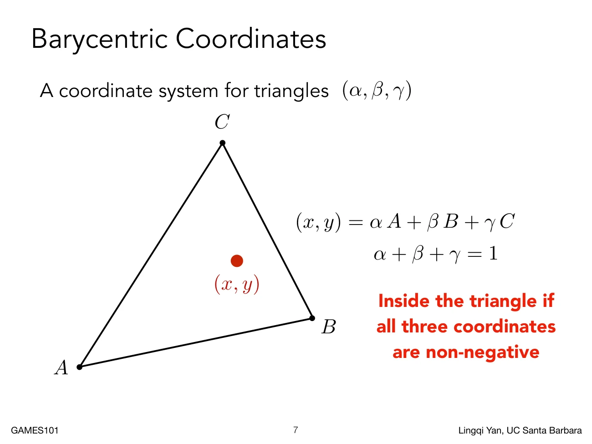
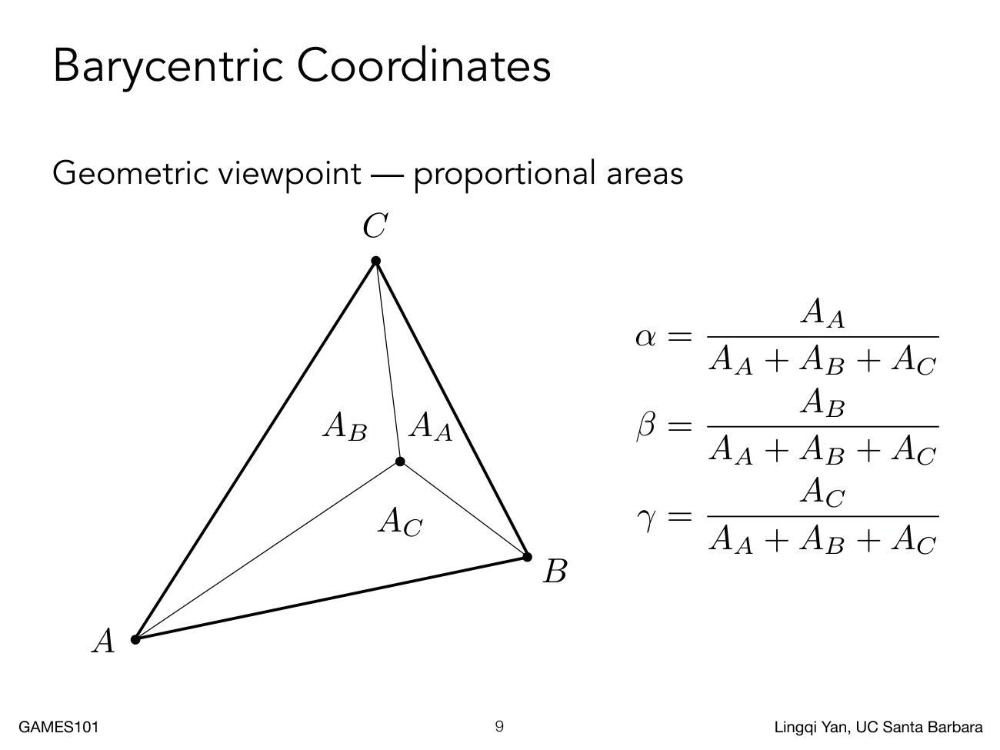
补充说明
课件 P10 给出了由坐标直接算 α、β 的展开公式，形式较长，本质是解线性方程组；工程上更推荐叉积面积法。
常见坑
忘记 α+β+γ=1 的约束 → 解出三个独立变量导致过约束 → 始终用 γ=1-α-β 消元
判断点是否在三角形内时用“坐标都大于 0” → 边上的点会被判到外面 → 应使用 ≥ 0（考虑浮点误差可加 epsilon）
三角形退化（三点共线）时面积为零 → 公式除零 → 光栅化前应剔除退化三角形
UE / Unity 落地
UE 的
F barycentric类（如FBarycentric）提供GetBarycentric计算，光栅化器内部也用它做属性插值Unity 的
UnityGetBarycentricCoordinates不是公开 API，但片元着色器里拿到的uv已经是硬件插值后的重心坐标结果
用叉积面积法计算重心坐标（伪代码）（cpp）
// 输入：三角形顶点 A,B,C 和点 P（均为屏幕空间 2D）
// 输出：重心坐标 (alpha, beta, gamma)
float area(A, B, C) { return cross(B - A, C - A); }
float areaPBC = area(P, B, C);
float areaPCA = area(P, C, A);
float areaPAB = area(P, A, B);
float total = area(A, B, C);
alpha = areaPBC / total;
beta = areaPCA / total;
gamma = areaPAB / total;
// 注意：叉积符号与顶点绕序有关，total 可能为负，需统一符号033. 用重心坐标插值顶点属性：线性插值与透视校正
有了重心坐标，插值就变成一句话：顶点属性按重心坐标加权求和。若顶点 A、B、C 上的属性分别为 \(V_A, V_B, V_C\)，则三角形内点 P 处的属性为
\[ V = \alpha V_A + \beta V_B + \gamma V_C \]
这里的 \(V\) 可以是位置、纹理坐标、颜色、法线、深度、材质参数等。注意这是线性插值：在三角形所在平面上，属性随位置线性变化。
但这里有一个大坑：重心坐标在投影下不是不变的（not invariant under projection）。光栅化是在屏幕空间做的，屏幕空间的重心坐标对应的是“投影后”的三角形；而纹理坐标、世界坐标等属性是在三维空间里定义的。如果直接拿屏幕空间重心坐标去插值三维属性，结果会错——尤其在透视投影下，近处和远处的三角形会被“压扁”，线性插值会产生明显的扭曲（比如地面纹理在远处拉伸）。
正确的做法是透视校正插值（perspective-correct interpolation）：对每个顶点属性除以它的裁剪空间 w 分量，插值后再除以插值后的 1/w。硬件光栅化器默认就做这件事，所以我们在着色器里拿到的 uv 已经是透视校正过的。但如果你自己手写软光栅或做后处理重建，就必须自己处理。
课件在这里还提醒：重心坐标不仅可以插值纹理坐标，还可以插值深度（用于深度测试）、法线（用于光照）、颜色（用于 Gouraud 着色）等。
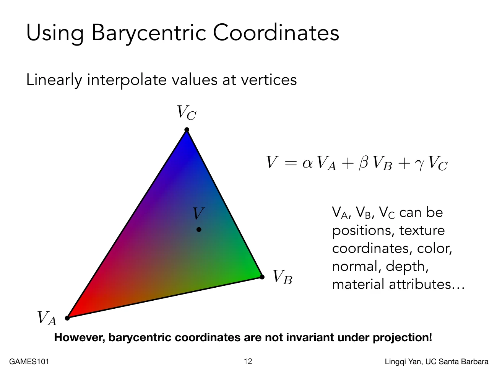
补充说明
透视校正的常见公式：\( V = \frac{\sum \alpha_i V_i / w_i}{\sum \alpha_i / w_i} \)，其中 \(w_i\) 是顶点裁剪空间 w。
常见坑
直接用屏幕空间重心坐标插值 UV → 透视投影下纹理扭曲（近大远小不自然） → 使用透视校正插值或让硬件自动处理
插值法线后未归一化 → 光照计算使用非单位法线，高光位置偏移 → 片元着色器里
normalize(N)插值深度后直接比较 → 深度值在透视下非线性，精度分布不均 → 使用 1/w 或翻转 Z 等技巧
UE / Unity 落地
UE/Unity 的硬件光栅化器默认做透视校正插值，着色器里
uv、normal等插值器已经是校正后的值Unity 中若在顶点着色器里手动计算某些属性并希望线性插值，可用
noperspective修饰符（HLSL）关闭透视校正
044. 简单纹理映射：从屏幕像素到纹理颜色
纹理映射（texture mapping）的目标是：给每个屏幕像素找到它对应的纹理颜色，作为 Blinn-Phong 模型里的漫反射系数 \(K_d\)（diffuse albedo）。流程可以拆成几步：
- 光栅化后，对每个屏幕采样点（通常是像素中心）(x, y)，用重心坐标算出它在三角形内的位置。
- 用重心坐标插值出该点的纹理坐标 (u, v)。
- 用 (u, v) 去纹理里采样：
texcolor = texture.sample(u, v)。 - 把采样到的颜色作为 \(K_d\) 代入 Blinn-Phong 公式，得到最终像素颜色。
伪代码大致是：
for each pixel (x, y):
(alpha, beta, gamma) = barycentric(x, y)
(u, v) = alpha * uvA + beta * uvB + gamma * uvC
texcolor = texture.sample(u, v)
color = BlinnPhong(texcolor, ...)
这里的关键是：纹理坐标是顶点属性，通过重心坐标插值得到。纹理本身是一张二维图像，每个小格子叫纹素（texel）。采样时 (u, v) 通常归一化到 [0,1]，具体采样方式（最近邻、双线性等）决定了图像质量，这正是后面要展开的内容。
常见坑
UV 超出 [0,1] 未处理 → 根据寻址模式（wrap/clamp/mirror）可能重复或拉伸 → 检查纹理的 Wrap Mode
把纹理颜色直接当最终颜色 → 丢失光照 → 纹理通常只作为 albedo，还要乘光照
UV 插值未做透视校正 → 远处纹理拉伸 → 依赖硬件或手动校正
UE / Unity 落地
UE 材质里
TextureSample节点输出 RGB，接到 Base Color；UV 由TexCoord节点提供，默认使用顶点插值后的 UVUnity Shader 里
tex2D(_MainTex, i.uv)采样，i.uv是插值后的纹理坐标；Wrap Mode 在纹理导入设置里调
片元着色器中的简单纹理映射（Unity 风格）（hlsl）
float4 frag(v2f i) : SV_Target {
float3 albedo = tex2D(_MainTex, i.uv).rgb;
float3 N = normalize(i.normal);
float3 L = normalize(_WorldSpaceLightPos0.xyz);
float3 V = normalize(_WorldSpaceCameraPos - i.worldPos);
float3 H = normalize(L + V);
float diff = max(dot(N, L), 0);
float spec = pow(max(dot(N, H), 0), _Shininess);
float3 color = albedo * diff + spec;
return float4(color, 1);
}055. 纹理放大：双线性插值让图像不糊不块
纹理放大（texture magnification）发生在纹理太小、屏幕像素太大的时候：一个屏幕像素只覆盖不到一个纹素，采样点落在纹素之间。如果直接取最近的纹素（nearest），图像会出现明显的马赛克方块。
解决办法是插值。最常用的是双线性插值（bilinear interpolation）：
- 找到采样点 (u, v) 周围最近的 4 个纹素，记为 \(u_{00}, u_{10}, u_{01}, u_{11}\)（按左下、右下、左上、右上排列）。
- 计算采样点在四个纹素之间的分数偏移 \((s, t)\)，其中 \(s\) 是水平方向偏移，\(t\) 是垂直方向偏移，均在 [0,1]。
-
先做两次水平线性插值： \[ u_0 = \text{lerp}(s, u_{00}, u_{10}), \quad u_1 = \text{lerp}(s, u_{01}, u_{11}) \]
-
再做一次垂直线性插值： \[ f(x, y) = \text{lerp}(t, u_0, u_1) \]
其中一维线性插值定义为 \(\text{lerp}(x, v_0, v_1) = v_0 + x(v_1 - v_0)\)。
双线性插值只需要 4 次采样和几次乘加，代价低、效果比最近邻好很多，是实时渲染的默认选择。课件还提到双三次插值（bicubic）：用周围 4×4 个纹素做三次插值，质量更好但更贵，常用于离线渲染或高质量缩放。
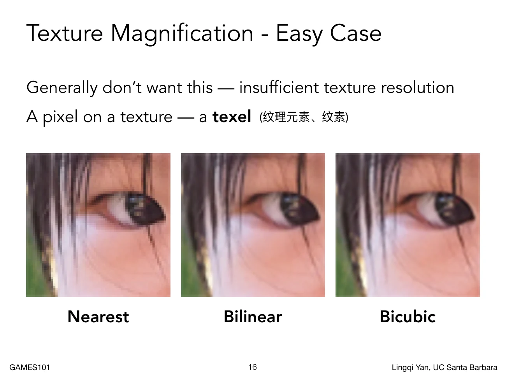
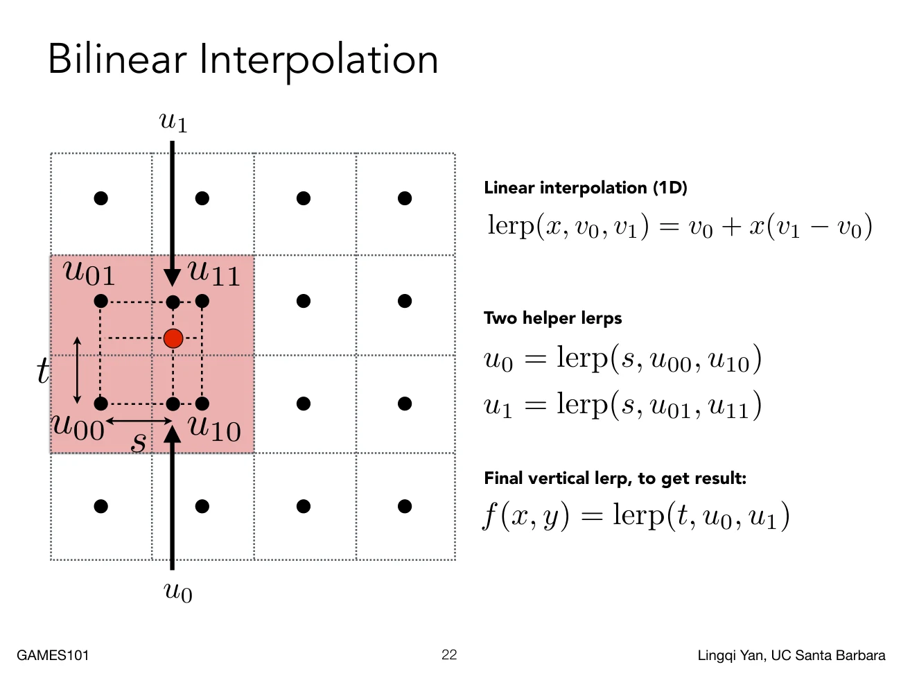
常见坑
把 (s,t) 算反 → 插值方向错误导致图像错位 → 确认 s 对应水平、t 对应垂直
纹理坐标未对齐到纹素中心 → 双线性采样偏移半个纹素 → 采样时减去 0.5 再取整（取决于 API）
在 sRGB 空间做插值 → 颜色偏暗 → 线性空间插值后再转回 sRGB
UE / Unity 落地
UE 纹理采样节点默认使用双线性过滤，可在纹理资产细节面板的 Filter 选项改为 Nearest、Bilinear、Trilinear
Unity 纹理导入设置里 Filter Mode 可选 Point (no filter)、Bilinear、Trilinear
双线性插值伪代码（cpp）
// 输入：纹理 tex，采样坐标 (u,v) 已映射到纹素空间
// 输出：插值颜色
int x0 = floor(u - 0.5), y0 = floor(v - 0.5);
int x1 = x0 + 1, y1 = y0 + 1;
float s = (u - 0.5) - x0;
float t = (v - 0.5) - y0;
Color u00 = tex[x0][y0], u10 = tex[x1][y0];
Color u01 = tex[x0][y1], u11 = tex[x1][y1];
Color u0 = lerp(s, u00, u10);
Color u1 = lerp(s, u01, u11);
Color result = lerp(t, u0, u1);066. 纹理缩小与摩尔纹：点采样为什么不行
纹理缩小（texture minification）是反过来的情况：纹理很大、屏幕像素很小，一个像素覆盖了很多纹素。这时如果还只取一个采样点（点采样，point sampling），就会出问题：
- 摩尔纹（moire）：高频纹理（如格子、细密条纹）在采样不足时产生低频干扰条纹。
- 锯齿（jaggies）：边缘出现阶梯状。
根本原因是信号频率太高，采样频率不够。课件用“屏幕像素在纹理空间的足迹（footprint）”来解释：一个像素在纹理上覆盖的区域可能远大于一个纹素，点采样只取其中一个点，丢失了区域内的平均信息。
一个直接的想法是超采样（supersampling）：每个像素发射很多条光线/采样很多次再平均。课件明确说：可以，但代价太高。512 倍超采样虽然质量高，但实时渲染负担不起。而且当缩小非常厉害时，一个像素覆盖的纹素极多，需要更高的采样频率，超采样也救不了。
换个思路：我们其实不需要“采样”，只需要该像素覆盖范围内的平均值。这就是范围查询（range query）：给定一个区域，快速求出区域内的平均颜色。点查询（point query）是取一个点，范围查询是取一个区域的平均——后者才是纹理缩小真正需要的。问题在于，每个像素的足迹大小不同、形状也不同，如何快速做范围查询？这就引出了 Mipmap。
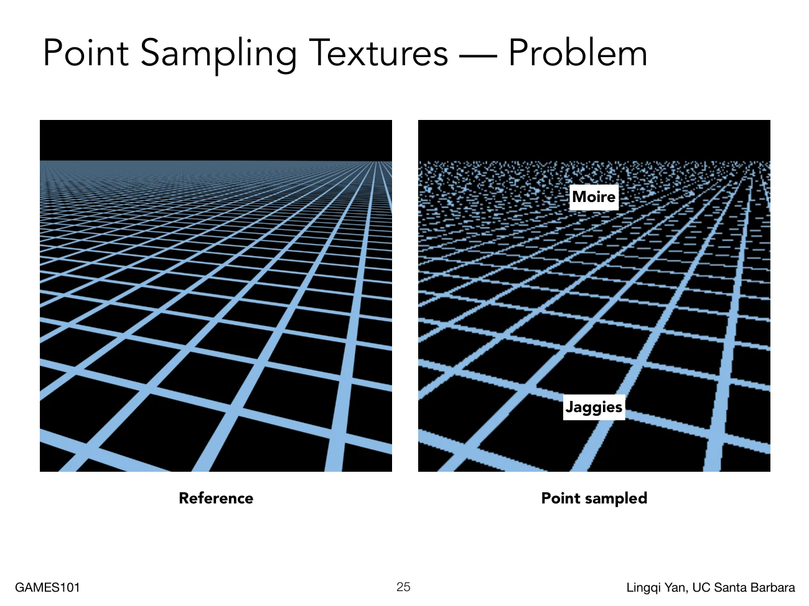
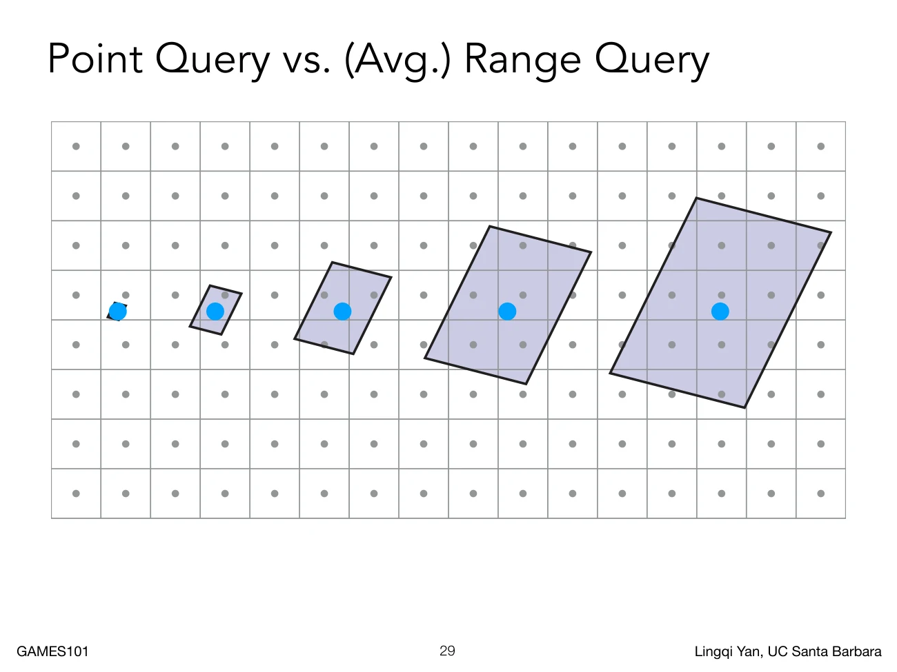
常见坑
缩小纹理时仍用双线性 → 只缓解不解决，高频区域仍有摩尔纹 → 开启 Mipmap
把超采样当万能药 → 缩小倍数大时采样数爆炸 → 用 Mipmap 做范围查询
忽略纹理内容频率 → 高频纹理在远处闪烁更严重 → 对这类纹理必须开 Mipmap + 各向异性过滤
UE / Unity 落地
UE/Unity 纹理默认生成 Mipmap，远处自动切到低级别；可在纹理设置里关闭（不推荐）
Unity 的 Quality Settings 里各向异性过滤（Anisotropic Filtering）可设为 Per Texture 或 Force On
077. Mipmap：用多级缩略图做快速范围查询
Mipmap 是纹理缩小的标准解法。它的思想非常朴素：预先算好一系列逐级缩小一半的纹理，形成金字塔。原始纹理是第 0 层，第 1 层是它的一半分辨率，第 2 层再一半，直到 1×1。名字来自拉丁语“multum in parvo”，意思是“小空间里装很多”。
存储开销：每一层面积是上一层的 1/4，总存储是 \(1 + 1/4 + 1/16 + \cdots = 4/3\) 倍原图，也就是额外 1/3 的开销。这个代价在实时渲染里完全可以接受。
怎么选层级？ 关键是估计屏幕像素在纹理空间的足迹大小。课件给出了一种实用方法：取屏幕空间相邻像素（比如 (x+1, y) 和 (x, y+1)）对应的纹理坐标差，计算 \(du/dx, dv/dx, du/dy, dv/dy\)，然后取
\[ L = \max\left( \sqrt{(du/dx)^2 + (dv/dx)^2},\ \sqrt{(du/dy)^2 + (dv/dy)^2} \right) \]
\[ D = \log_2 L \]
直观理解：\(L\) 是像素在纹理空间移动一个像素时，纹理坐标走了多远（以纹素为单位）；取 log2 就得到应该用第几层 Mipmap。如果 \(L=1\)，说明一个像素大约覆盖一个纹素，用第 0 层；\(L=2\) 用第 1 层，依此类推。
三线性插值（trilinear interpolation）：算出的 D 通常是小数，直接四舍五入会在层级切换时出现明显的“跳变”。做法是：在相邻两层 D 和 D+1 上分别做双线性插值，得到两个颜色，再按 D 的小数部分做一次线性插值。这样层级过渡就平滑了。
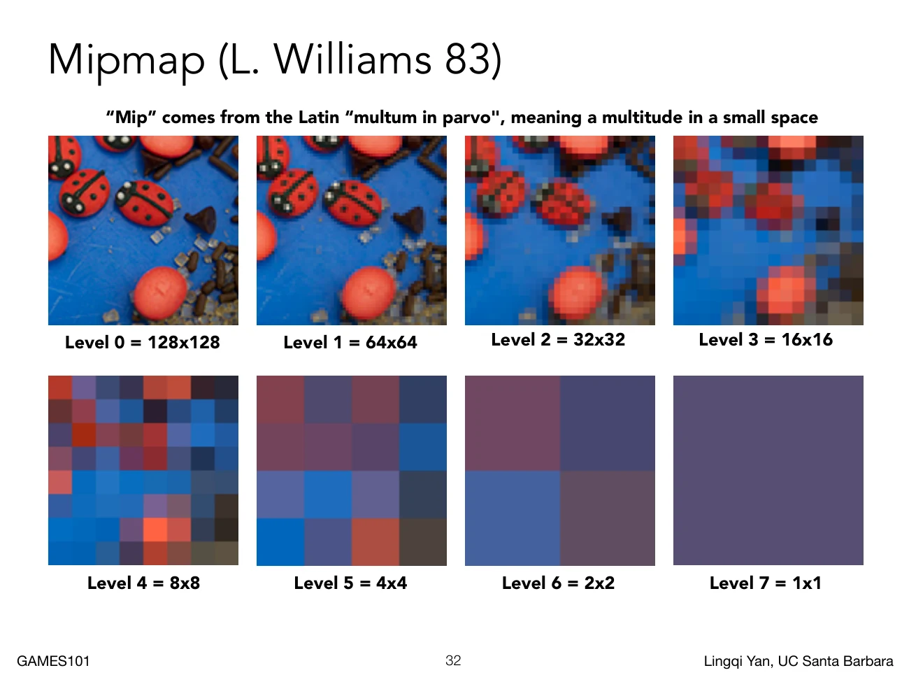
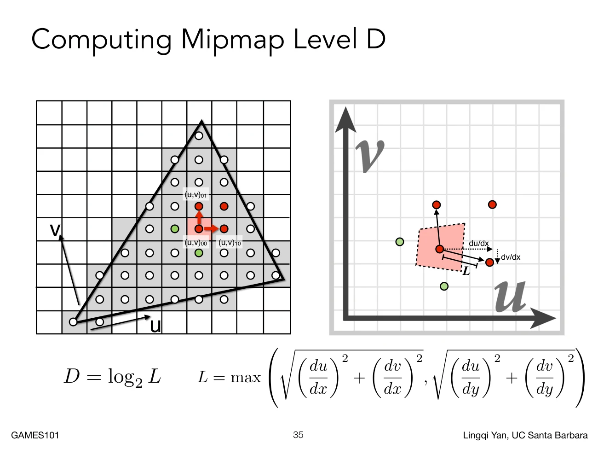
补充说明
课件 P34 的公式中 L 取两个方向导数的最大值，是为了保证足迹较大的一侧也被覆盖，避免欠采样。
常见坑
层级 D 直接四舍五入 → 层级切换处出现明显接缝 → 用三线性插值
忘记 Mipmap 存储开销 → 显存预算算错 → 按 4/3 倍原图估算
各向异性很强的表面只用 Mipmap → 斜向纹理过模糊 → 开各向异性过滤
UE / Unity 落地
UE 纹理资产默认生成 Mipmap，可用
Texture LOD Group控制不同距离的层级；材质里可用Texture Sample的MipValue手动指定层级Unity 纹理导入设置里 Generate Mip Maps 默认开启，Sampler State 可选 Trilinear；Shader 里用
tex2Dlod手动指定 mip 层级
手动计算 Mipmap 层级（伪代码）（hlsl）
// 输入：当前像素的 uv，以及屏幕空间导数 ddx(uv), ddy(uv)
float2 dx = ddx(uv);
float2 dy = ddy(uv);
float L = max(length(dx), length(dy)); // 像素在纹理空间的最大移动距离
float D = log2(L);
// 三线性插值：在 floor(D) 和 floor(D)+1 两层分别双线性采样，再按 frac(D) 线性插值
float D0 = floor(D);
float4 c0 = tex2Dlod(tex, float4(uv, 0, D0));
float4 c1 = tex2Dlod(tex, float4(uv, 0, D0 + 1));
float4 color = lerp(c0, c1, frac(D));088. Mipmap 的局限与各向异性过滤
Mipmap 很好用，但它有一个根本假设：像素在纹理空间的足迹是正方形。这是因为 Mipmap 每一层都是各向同性的（isotropic）正方形缩略图。
但现实中，当一个表面以很斜的角度对着相机时（比如地面向远处延伸），屏幕像素在纹理空间的足迹会被拉长成斜向的长方形。这时 Mipmap 只能按最长边选层级，导致短边方向被过度平均，图像变得过模糊（overblur）。课件展示了 Mipmap 三线性采样与 512 倍超采样的对比，前者明显更糊。
解决办法是各向异性过滤（anisotropic filtering）：允许在长边和短边方向使用不同的缩放。常见方案有：
- Ripmap：在 Mipmap 基础上，额外生成只在 u 方向或只在 v 方向缩小的层级，形成“矩形”层级，可以查询轴对齐的矩形区域。但它仍然处理不了斜向的足迹。
- Summed Area Table（SAT，积分图）：可以快速查询任意轴对齐矩形区域的平均值，但存储和精度代价较高。
- EWA 过滤：用多次查询加权平均来近似任意形状的足迹，能处理斜向和不规则形状，质量最好但最贵。
课件最后指出：各向异性过滤“比 Mipmap 更好”，是现代 GPU 的标配。在 UE/Unity 里通常只需在纹理设置里开启各向异性过滤，硬件会自动选择采样次数（2x、4x、8x、16x）。
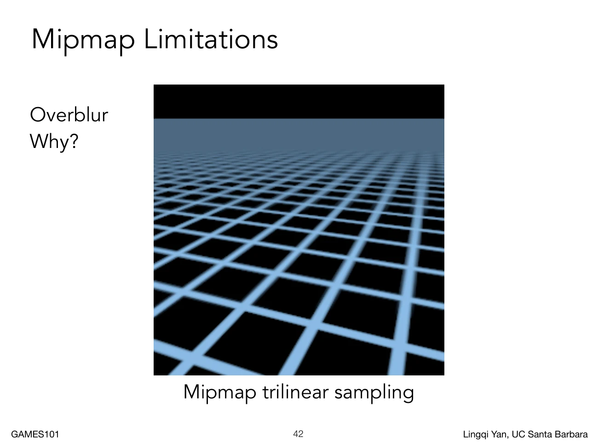
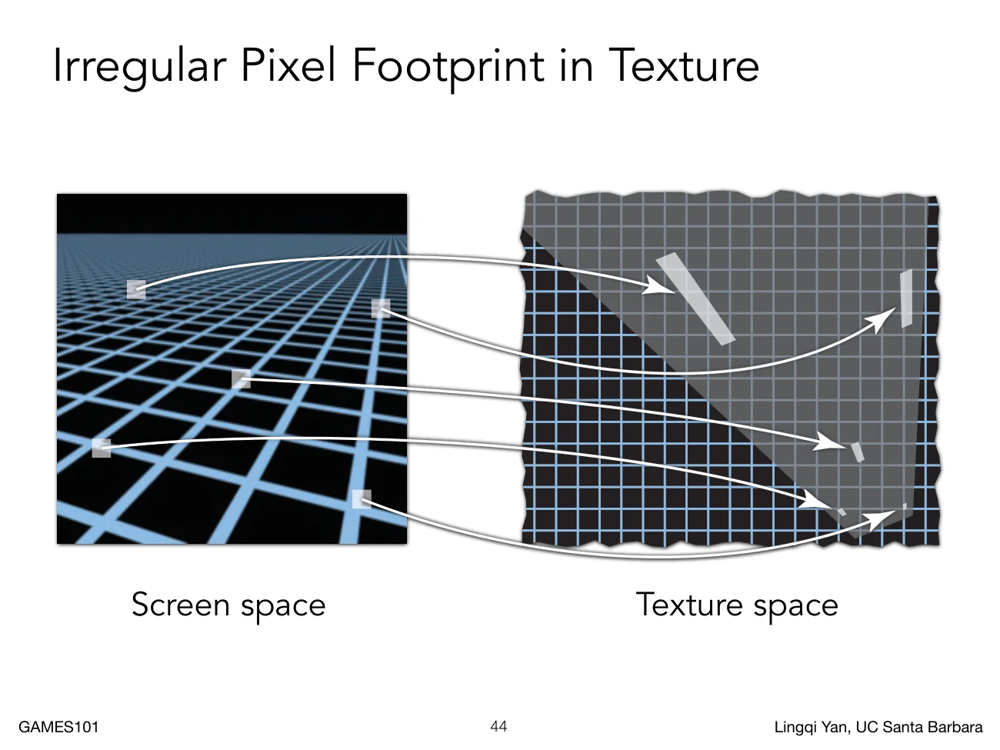
常见坑
斜视角下纹理糊成一片 → Mipmap 各向同性假设失效 → 开启各向异性过滤（Anisotropic Filtering）
各向异性过滤开太高 → 采样次数增加，移动端/VR 性能下降 → 按平台选择 4x 或 8x
Ripmap 处理斜向足迹仍不完美 → 斜向纹理仍有模糊 → 考虑 EWA 或更高档各向异性
UE / Unity 落地
UE 纹理资产细节面板的
Filter设为Default时使用各向异性过滤，可在Texture LOD Group里调各向异性级别Unity 纹理导入设置里 Aniso Level 可调 0~16，Quality Settings 里也有全局各向异性过滤开关
引擎对照表
| 概念 / 效果 | Unreal Engine | Unity |
|---|---|---|
纹理采样与过滤 | Texture Sample 节点，Filter 可选 Nearest/Bilinear/Trilinear，默认各向异性 | tex2D / SAMPLE_TEXTURE2D，纹理导入设置 Filter Mode 与 Aniso Level |
Mipmap 生成与层级 | 纹理资产默认生成 Mipmap，可用 Texture LOD Group 控制；材质里 MipValue 手动指定 | Generate Mip Maps 默认开启，tex2Dlod 手动指定层级 |
重心坐标插值 | 光栅化器自动插值，FBarycentric 可用于自定义计算 | v2f 结构体字段自动插值，noperspective 可关闭透视校正 |
各向异性过滤 | 纹理 Filter 默认各向异性，Texture LOD Group 可调级别 | 纹理 Aniso Level 0~16，Quality Settings 全局开关 |
纹理坐标与 UV | TexCoord 节点，材质里可乘 Tiling/Offset | i.uv 插值器，_MainTex_ST 控制 Tiling/Offset |
术语双语表
| English | 中文 | 说明 |
|---|---|---|
| Barycentric Coordinates | 重心坐标 | 三角形内的坐标系，用三个权重表示点的位置，权重和为 1 |
| Texture Magnification | 纹理放大 | 纹理太小、屏幕像素太大时，一个像素覆盖不到一个纹素 |
| Texture Minification | 纹理缩小 | 纹理太大、屏幕像素太小时，一个像素覆盖多个纹素 |
| Bilinear Interpolation | 双线性插值 | 在 2×2 纹素上先水平两次 lerp 再垂直一次 lerp |
| Mipmap | 多级渐远纹理 | 预计算的一系列逐级减半的纹理金字塔，用于快速范围查询 |
| Trilinear Interpolation | 三线性插值 | 在相邻两级 Mipmap 上分别双线性采样，再按小数层级线性插值 |
| Anisotropic Filtering | 各向异性过滤 | 允许不同方向不同缩放，处理斜向拉长的像素足迹，减少过模糊 |
| Moire | 摩尔纹 | 高频纹理采样不足时产生的低频干扰条纹 |
| Texel | 纹素 | 纹理图像中的一个像素单元 |
| Range Query | 范围查询 | 查询一个区域内的平均值，与点查询相对，是纹理缩小的本质需求 |
课后练习
01 三角形顶点 A(0,0)、B(1,0)、C(0,1)，点 P(0.2, 0.3)。求 P 的重心坐标，并判断 P 是否在三角形内。
查看答案
提示：
用面积法或解方程 αA+βB+γC=P，α+β+γ=1。
由 P = αA + βB + γC 且 α+β+γ=1，代入坐标得：α·0 + β·1 + γ·0 = 0.2 → β=0.2；α·0 + β·0 + γ·1 = 0.3 → γ=0.3；α = 1-β-γ = 0.5。三个坐标均非负，P 在三角形内。
02 一张 1024×1024 的纹理，开启 Mipmap 后总存储是多少？如果每个纹素 4 字节，总共多少 MB？
查看答案
提示：
Mipmap 总存储是原图的 4/3 倍。
原图 1024×1024 = 1,048,576 纹素，Mipmap 总纹素数为 1,048,576 × 4/3 ≈ 1,398,101。每纹素 4 字节，总字节约 5,592,405 字节 ≈ 5.33 MB（原图约 4 MB）。
03 已知某像素在纹理空间的导数 |du/dx|=0.5, |dv/dx|=0, |du/dy|=0, |dv/dy|=0.5（单位：纹素/像素），求 Mipmap 层级 D。
查看答案
提示：
L = max(√((du/dx)²+(dv/dx)²), √((du/dy)²+(dv/dy)²))，D = log2 L。
第一个方向长度 = √(0.5²+0²)=0.5，第二个方向长度 = √(0²+0.5²)=0.5，L = max(0.5, 0.5)=0.5。D = log2(0.5) = -1。实际中 D 会被 clamp 到 0，即使用第 0 层（因为足迹小于一个纹素，属于放大情况）。
04 为什么 Mipmap 在斜视角下会过模糊？各向异性过滤如何改进？
查看答案
提示：
从“足迹形状”和“各向同性假设”两个角度回答。
Mipmap 每层都是各向同性的正方形缩略图，假设像素在纹理空间的足迹是正方形。斜视角下足迹被拉长成斜向长方形，Mipmap 只能按最长边选层级，导致短边方向被过度平均，图像过模糊。各向异性过滤允许在长边和短边方向使用不同的缩放（如 Ripmap 生成矩形层级，或 EWA 用多次查询加权平均），从而匹配拉长的足迹，减少模糊。
05 在 UE 或 Unity 里，如何为一个地面材质开启各向异性过滤并观察效果？请写出操作步骤。
查看答案
提示：
UE 看纹理资产的 Filter 和 Texture LOD Group；Unity 看纹理导入设置的 Aniso Level 和 Quality Settings。
UE：选中地面纹理资产，在细节面板确认 Filter 为 Default（各向异性），在 Texture LOD Group 里把 Anisotropic 设为 4x 或 8x；在材质里用 Texture Sample 采样，斜视角观察地面远处是否变清晰。Unity：选中纹理，在导入设置里把 Aniso Level 调到 4 或 8，Generate Mip Maps 保持开启；在 Quality Settings 里确认 Anisotropic Textures 为 Per Texture 或 Force On；在场景里斜视角观察地面纹理。